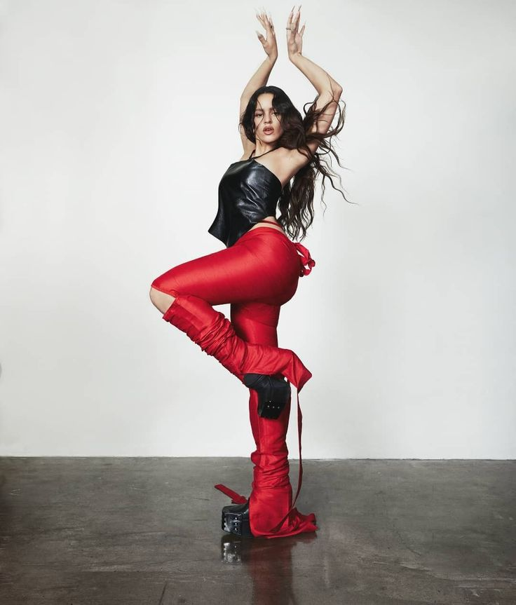

EL AFTER DEL AFTER
POR LUCAS SANTOMERO
El after del after es el paso definitivo hacia la fusión entre el trap más argento y las corrientes más densas de la música electrónica.
Ysy A no falla y como cada 11 de noviembre volvió a sorprender a sus fanáticos con un nuevo lanzamiento. Una vez más, el cantante, compositor, productor y cofundador de Modo Diablo eligió esta fecha tan significativa en su carrera para presentar un nuevo álbum de estudio titulado El after del after.
.jpeg)
En esta oportunidad, Alejo Nahuel Acosta sumó a numerosas figuras de la escena urbana a nivel mundial, entre quienes se destacan Quevedo y Duki, no solo aportando su estilo propio a la obra sino también inaugurando una nueva etapa de experimentación artística en la vida del fundador de El quinto escalón.
íntegramente en Sponsor Dios por el productor cabecera del trapero, Oniria, El after del after es el paso definitivo hacia la fusión entre el trap más argento y las corrientes más densas de la música electrónica. “La gente que me sigue hace años sabe que siempre incursioné sobre la electrónica”, expresó Ysy A en un comunicado de prensa.
Como ocurre con cada lanzamiento, habrá una celebración especial para presentarlo en vivo. Es por eso que el próximo 17 de diciembre el autodenominado “hombre sismo” se presentará por primera vez en el estadio del Club Atlético Huracán en lo que promete ser un show consagratorio.
MOTOMAMI: El camino de Rosalía a su propia emancipación
POR DIEGO ORTIZ
«Antes de mis trece años nunca había escuchado flamenco’, señala Rosalía cuando le pregunto sobre sus raíces. Estamos en el emblemático hotel Four Seasons de la Ciudad de México. Luego de varios encuentros coincidimos para escuchar su nuevo disco y terminar una conversación que inició a comienzos del 2020, en plena pandemia. La española lleva su pelo cogido y luce una camiseta grande que hace las veces de minifalda. El rojo de sus labios contrasta con el color de sus uñas; luce botas Rick Owens que van hasta encima de su rodilla, y parecen salidas de la última película de Mad Max. “Cuando lo escuché, para mí fue un antes y después”.
Para una artista que ha sido cuidada para ser la sucesora de las más grandes súper estrellas del pop global, Rosalía es abrumadoramente cálida y cercana. Nos dirigimos a Sony Music Studios, un legendario estudio de grabación en la zona industrial al norte de la ciudad; el mismo en donde se grabaron algunas de las más grandes canciones de José Alfredo Jiménez. El plan está acordado; escuchar por primera vez MOTOMAMI, el último disco conceptual que le ha tomado más de tres años de desarrollo y con el que regresa en 2022 para imponer un camino artístico que la ha llevado a su propia emancipación.
Rosalía Vila Tobella, de 28 años, nació en San Cugat del Vallés, a las afueras de Barcelona. Aunque su abuela la llevaba a clases de baile mientras que su madre trabajaba, creció en un entorno alejado del flamenco y solo se conectó con él hasta su adolescencia, cuando conoció a artistas como Camarón de la Isla. “Siempre, desde muy pequeña pude bailar, cantar; no recuerdo un momento en mi infancia sin vivir eso. Desde los 10 años ya estaba cantando en casa, sin nada de técnica, no sabía lo que estaba cantando”. Pero sería hasta los 16 años y ya obsesionada con el flamenco, que empezó a tomar clases profesionales. “Yo no sabía que iba a poder usar mi voz en el flamenco, hay muchos tipos de voces en el flamenco… no es lo mismo un Valderrama que un Camarón”.
En 2017, junto con el productor y guitarrista Raül Refree, grabó Los ángeles, un álbum conceptual de flamenco que rinde culto al duelo y a la muerte; en él Rosalía expone toda la potencia de su voz y el alcance de su virtud como soprano. Allí presenta dos melodías aplastantes como ‘De plata’ y ‘Aunque sea de noche’. En ese mismo año, sería nominada como Mejor Nuevo Artista en los Latin Grammy, mientras se encontraba grabando su segundo álbum, El mal querer, que la llevó rápidamente a la penetración del mercado latino y a la admiración de la crítica especializada, ayudada, en parte, por una docena de videos realizados por CANADA, que funcionaron como un statement estético para su obra.
Desde entonces, se enfocó en las colaboraciones con otros artistas, haciendo más de una docena de hits en los que se destacan aciertos como ‘Antes de morirme’ con C. Tangana, ‘TKN’ al lado de Travis Scott, ‘Con Altura’ junto a El Guincho y J Balvin, o ‘Yo x Ti, Tu x Mi’ con Ozuna. “Para forjarte como músico, tienes que escuchar mucha, mucha música”, me dice mientras que ella misma configura el sonido y los detalles del estudio ‘Vicente Fernández’, ya que no quiere que nadie lo escuche. Soy el primero en hacerlo fuera de su círculo de confianza. Un cable desde su laptop va directo a la entrada de la consola de 72 canales. Me ofrece una copa de vino mexicano, ¡y lo primero que suena es ‘Saoco’!
MOTOMAMI es un conjunto de binomios que configuran, en pares disonantes, una obra maestra basada en progresiones, sintetizadores y órganos saturados. Es un disco vanguardista que recoge las raíces y las capacidades técnicas de Rosalía, y al terminar de escucharlo deja más preguntas que respuestas. Cuestiona la música comercial como la conocemos. ¿Cuatro Cuartos? ¿Coros pegajosos, beats o dembows homogéneos? No. Por el contrario, desarma la estructura tradicional de la música en español, haciendo que las raíces sirvan de acompañamiento melódico y no rítmico. Sus bombos triggueados recuerdan fácilmente al bombo de Trent Reznor, y llevan la experimentación a tal nivel que invoca a quienes lograron liberarse de la industria comercial para hacer su verdadero arte.
El grado de exploración lírica, rítmica y sonora de MOTOMAMI es comparable con grandes obras en donde la experimentación es un exceso exitoso como Ill Communication de los Beastie Boys o Play de Moby; álbumes que parten de la deconstrucción y el cuestionamiento. Pero también puede ser dulce, cálida y vanguardista como Lorde en Pure Heroine; o ruda y cruda como The Downward Spiral de NIN. En varias ocasiones, Rosalía sobresatura y juega con su voz a tal límite que, sin titubear, la deconstruye constantemente creando samples y sonidos que se entrelazan con la base rítmica, si es que se le puede llamar así a la percusión sincopada, fuera de tiempo y puesta en caliente según la progresión de la canción. Además, redefine la estructura, haciéndola discordante y asimétrica, pero esta es una de sus cualidades más interesantes, incluso en exceso.
Eso de los géneros es cuestión del pasado, aquí hay espacio para todo, todo está cosido con puntadas a mano que forman el esqueleto de lo que debería ser la música urbana contemporánea: arte y sabor, dembow, champeta, flamenco, bachata, hip hop y melodías de piano. Cuando terminamos, Rosalía cae en llanto. El producto más honesto de su vulnerabilidad ha sido expuesto. Después de tres años de exploración siente que ha culminado el álbum más importante de su carrera y, escuchando canción por canción, recuerda cada discusión y sesión con su equipo de trabajo; entiende, por primera vez como espectadora, la grandeza de su obra. Es un reflejo de sí misma.
En los últimos años ella fue como David Bowie en Laberinto; frente a una industria despiadada, en la que todas las puertas están custodiadas por hábiles y mentirosos, solo hay una hacia la salvación: el trabajo duro y la experimentación. Las preguntas quedan hechas: ¿Podemos dejar de ver a la música en formatos y géneros obsoletos? ¿La música comercial en español debe continuar siendo el resultado de un molde homogéneo de galletas simples, dulces y empalagosas? España parece tener todas las respuestas. Mientras tanto, MOTOMAMI es un tren del futuro que viene hacía nosotros, sin frenos y a gran velocidad. Rosalía es el deseo y la fuente de fuego infinito que lo alimenta.
seguir leyendo en "Rolling Stone"Wos estrena adelanto de su nuevo disco: "Morfeo"
POR LUCAS SANTOMERO
A semanas de realizar sus shows despedida de Oscuro éxtasis, Wos publicó un nuevo single titulado "Morfeo". El artista argentino había anticipado el lanzamiento del tema hace algunos días a través de su canal de Instagram y hoy finalmente se concretó. Esta canción se configura como una pequeña mirada a su tercer álbum de estudio, el cual todavía no tiene fecha confirmada. El concepto detrás de "Morfeo" profundiza en lo más cotidiano de la vida, haciendo hincapié en la dualidad que existe entre lo dañino y lo necesario de la rutina. Tomando distancia para ver el contexto desde otra perspectiva, Valentín Oliva expone lo cercanos que pueden ser los extremos, poniendo en un lugar relativo todos los hábitos y los vaivenes del día a día.
.jpeg)
.jpeg)
El concepto detrás de “Morfeo” profundiza en lo más cotidiano de la vida, haciendo hincapié en la dualidad que existe entre lo dañino y lo necesario de la rutina. Escuchá el single en esta nota.
El single fue publicado con un videoclip oficial y, como de costumbre, estuvo dirigido por Noduermo. En él, Valentín camina por el microcentro de la ciudad con tranquilidad hasta que todo a su alrededor empieza a ir en reversa. Mientras tanto, algunas situaciones que transcurren en el fondo se vuelven surrealistas. Al igual que toda la música publicada por Wos, "Morfeo" contó con la producción musical de Evlay y sigue el camino que comenzó con "Descartable" -primer corte del próximo álbum lanzado el pasado mes de mayo-, proponiendo un sonido completamente renovado, único y vertiginoso.